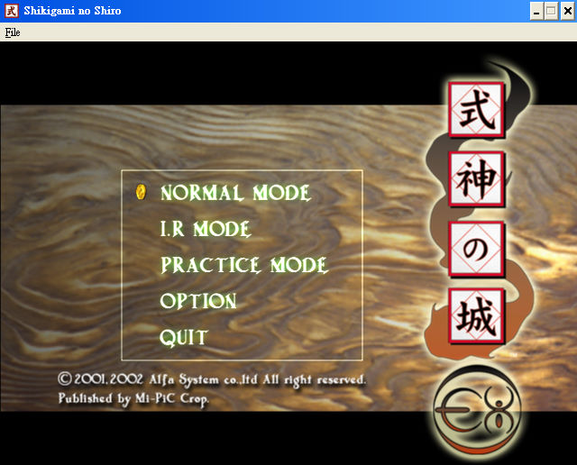
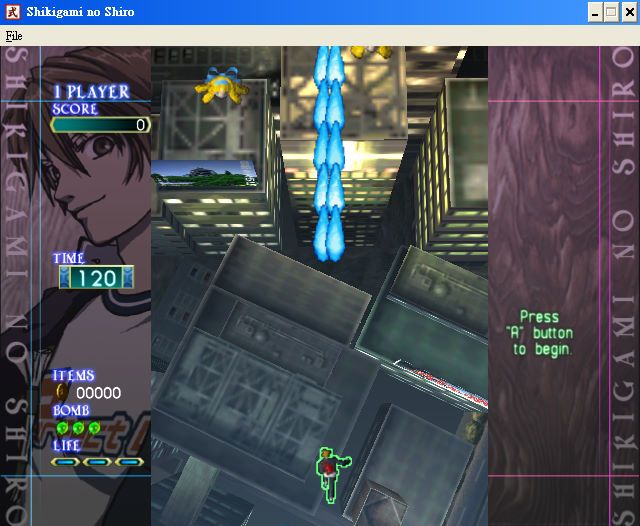

名稱：式神之城1／式神之城EX (Castle of Shikigami／Shikigami no Shiro／Mobile Light Force 2，日文／英文版)
簡介：Alfa 2001年出品的直向捲軸射擊遊戲，2002年移植至Windows，改以「式神之城EX」
的名稱發行 [待補]。


保護：光碟，破解碼：
shiki.exe
83 C4 04 85 C0 75 0F
-- -- -- -- -- EB --
檔案：English Patch.rar = 英化檔（只改了功能選項，遊戲內文依然是日文）